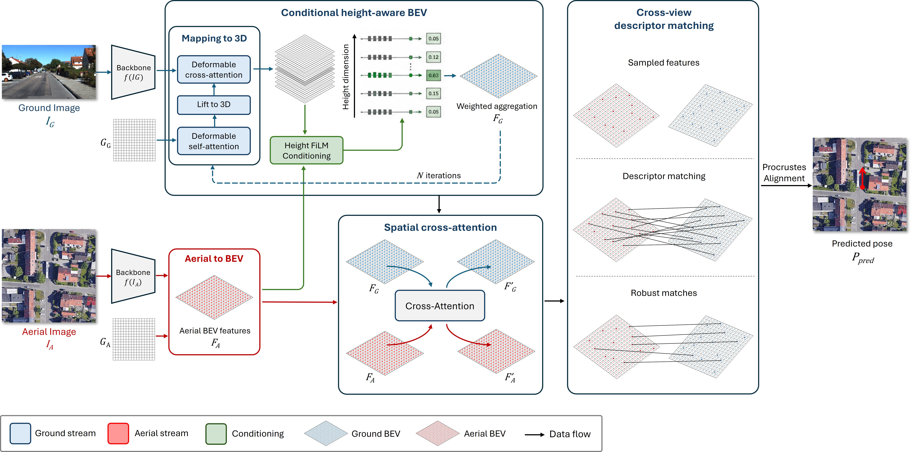

This paper addresses the problem of cross-view geo-localization, where the goal is to estimate the vehicle pose by matching ground observations to aerial imagery. Existing methods typically learn feature alignment implicitly and often discard height information during bird's-eye-view (BEV) construction, limiting robustness and introducing ambiguity. To overcome these limitations, we propose a transformer-based framework that reformulates cross-view geo-localization as an explicit conditional alignment problem in BEV space. Our method introduces a conditional height-aware feature selection mechanism, where satellite BEV features condition the selection of the most relevant height-wise ground features prior to BEV pooling, preserving informative 3D structure and reducing ambiguity. In addition, we propose a spatial cross-attention module that directly couples ground and satellite BEV features through direct cross-view feature exchange, enabling more robust alignment under challenging conditions. Experiments on FordAV and KITTI benchmarks indicate consistent improvements over state-of-the-art methods. In particular, our approach achieves superior performance under cross-area evaluation, demonstrating improved generalization across unseen geographic regions and appearance variations, while reducing localization error by 33.8% compared to the previous state of the art on FordAV. Furthermore, we introduce a lightweight variant, CAR-Lite, which achieves 8.55 FPS while maintaining competitive localization accuracy.
@inproceedings{poulopoulos2026carcvgl,
title = {CAR-CVGL: Conditional Height-Aware BEV Representation for Cross-View Geo-Localization},
author = {Poulopoulos, Nikolaos and Gkillas, Alexandros and Anagnostopoulos, Christos and Lalos, Aris S. and Le, Huu and Nguyen, Duong Van},
booktitle = {British Machine Vision Conference (BMVC)},
year = {2026}
}